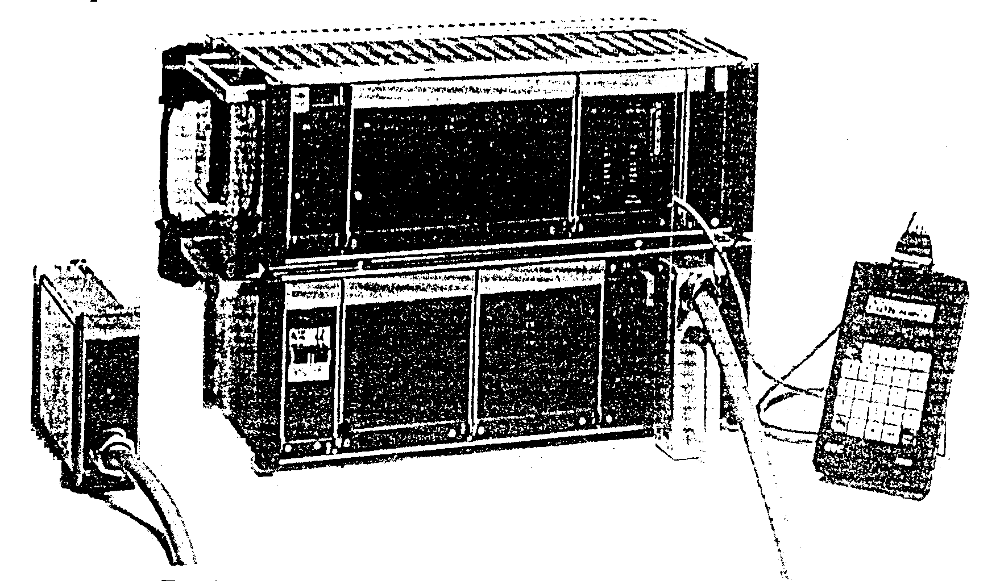
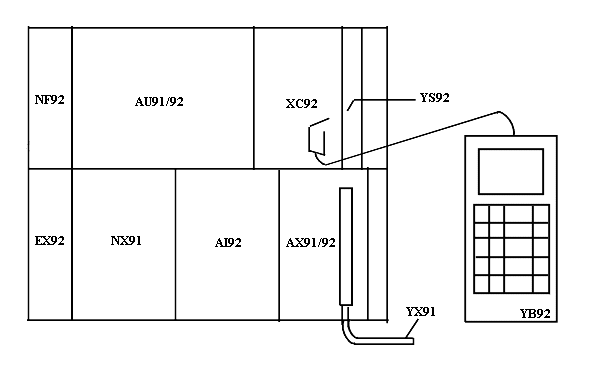
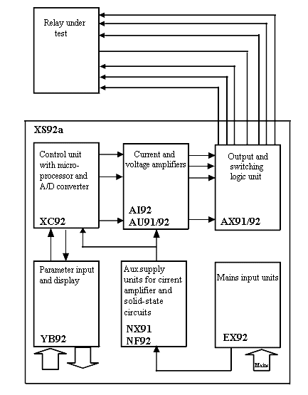
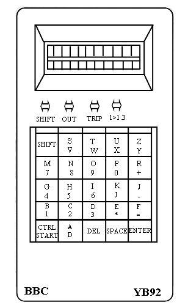
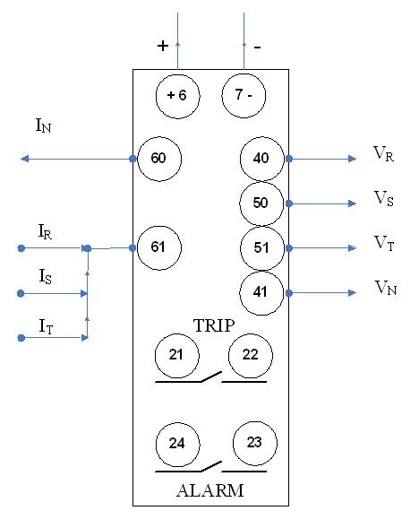
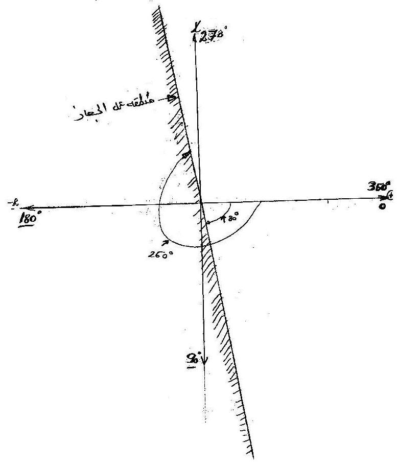
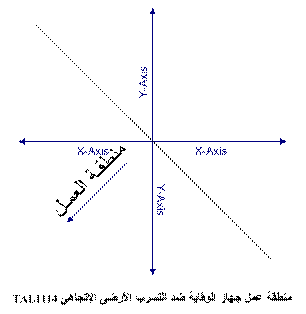

|
 |
|
Protection |
Technical
Procedure | |
|
Equipment:
Directional Earth Fault Relay
TAL1114
GEC
|
Document No:
EFR-042-r0 |
|
Issued to: Sharkia
North SS |
|
Status:
APPROVED |
|
Procedure:
Using XS92a Test Set
|
Approved Date: 08 May 2007 |
|
Date to be Reviewed: May
2012 |
Introduction
This document outlines the testing
procedures P1, which must be performed on an annually bases as indicated by Y1
in the above title block.
The first
draft initiated & tested by eng. Salah Elsaied
Abd-Elaal, reviewed by protection
manager eng. Magdy Salem, accepted and approved by general manager Eng.
Mohamed Elshahhat, revised by
eng. Mohamed Emran: quality control general manager,
approved by eng. Alsaied Abd-Elaziz Nagy: Head Sector of Protection, Measurement
& Testes and certified by eng. Ali Atiia Eldeeb: Head Sector
of Canal Western Networks and MPIS Canal Zone Coordinator.
Safety Precautions
-
A work permit must be issued
-
The maintenance staff should carry the suitable ID safety category,
-
Maintenance
staff should be trained well, qualified or directly supervised by some one
who is.
-
Safety fence with caution marks surrounding the work area is required.
-
Personal
safety and healthy equipment must be used as safety shoes, safety helmet ...
etc
-
Outage arrangement must be done.
-
Isolate the relay DC supply before drawing out
any relay card.
-
Isolate the relay associated breaker trip Coils,
breaker failure system, disturbance alarm and fault recorder systems.
Tools and Equipment
Secondary injection test set ( XS92a
).
Ammeter, AVOmeter & AC
supply.
Two test plugs ( voltage and current
).
Test leads, Voltmeter
Work to be Carried Out
Steps to Prepare for Relay Testing
-
Review technical reference material: Manufacturer's manual.
-
Obtain copy of
relay settings from field maintenance file and compare it with the relay
settings .
-
Obtain outage for line protected by this relay .(
work permit must be issued )
-
Check that the bus and line disconnect switches are opened and tagged .
-
Make sure CT's Secondary circuits are
shorted before isolating the relay current circuits forcurrent
injection
Make sure V.Ts miniature circuit breakers (
MCB's ) is disconnected .
Isolate the relay DC supply .
Check that all cables supplying the relay and all
wire connections are in good conditions.
Preparing
the Tester unit ( XS92a ) as followings
-
Position the two units of XS92a as in figure (1)
and figure (2).
-
The tester unit ( XS92a) should be earthed .
-
Connect the three jumpers between the two units.
-
Connect the hand terminal unit (YB92) -figure (3)
- to the control unit (XC92) in the upper unit .
-
Connect current and voltage terminals unit to (
output and switching logic unit AX91/92 ) .
-
Connect current and voltage terminals unit to
relay current and voltage test socket terminals . as in figure (4).
-
Connect the test unit (XS92a) power supply ( 220
Va.c ) .
-
Turn ( ON ) the switches on the lower and upper
units of tester (XS92a) .
-
Use the hand terminal ( YB 92 ) according to
test steps .
Parameters
Preparation
-
Restore DC supply to the relay scheme while
the tester (XS92a) is ( 0N ) i.e ready.
-
On HAND TERMINAL UNIT ( YB92 ) Set :
-
MODE : FF then ENTER.
-
FREQUENCY = 50 Hz.
-
DFR = 0 ( Frequency Change )
-
Static or Dynamic Injection
SQ = 2 i.e Static injection.
-
Automatic search A = 2 i.e with
Interruption for Increasing injection signal
-
FC : fault codes ( 01) i.e Earth Fault
-
TL : duration of off-load voltage injection
= 100 ms
-
To : duration of zero injection = 100 ms
-
Mode : UI then Enter ( in case of injection on
directional over current relay i.e to Earth )
-
U : fault voltage = 63.5 V; U = ( 0.0
: 70 ) V
-
I : fault current range = 0.6 A;
Operating Current = ( 0.0 : 20 ) A
-
PHI : angle between fault voltage and
current = Value inside relay operating zone, PHI
= ( 0° : 359° )
-
TF : duration of fault injection = 300 ms >Relay time setting. Duration of fault
injection = (0 : 9999) ms
-
DU : (0.1 : 10 ) V Voltage change rate
-
DI : (0.01 : 1.0 ) A Current change rate
-
DPH : ( 1° : 30° ) Angle change rate
Relay Testing
The test is accomplished in
three stages
-
Finding
relay operating current value while the voltage and current angle are
constant .
-
Finding
relay operating angle zone while the voltage and current are constant .
-
Finding
relay operating time .
Finding relay operating current
(The voltage and current
angle are constant )
-
Set
MODE = UI
i.e Directional over current relay i.e Directional Over Current to
Earth
U
= 63.5 V (constant voltage ); U = ( 0.0 : 70 ) V
PHI
= 359° The relay current phase angle setting (constant
angle) ; PHI = ( 0° : 359° )
I
= 0.6 A < The relay operating Current setting;
Operating Current = ( 0.0 : 20 ) A
TF =
300 m.s >The relay operating time setting; Duration of fault injection=(0 :
9999) ms
SQ
= 2 i.e
Static injection signal
A
= 2 i.e
Automatic search with interruption for Increasing injection signal.
DI
= 0.1 A ; Current change rate = ( 0.01 : 1.0 ) A
-
Press start
button then ( + ) button to start injection of testing signal.
-
Wait until
auto. stop trigger point of relay starting current is shown on display.
-
Record in
test sheet : the value of relay starting current ( I ) and the lighted leds on
the relay.
-
Press ( 0 )
button then Enter.
-
Press the
relay Reset .
Finding relay operating
angle zone ( The voltage and current are constant )
-
Set
U
= 63.5 V (constant voltage ) ; U = ( 0.0 : 70 ) V
I = 1.6 A ( The relay operating Current setting )
; Operating Current = ( 0.0 : 20 ) A
PHI = 10° assumed value outside the relay operating
angle zone ( ° : ° )
DPH = 0.01° ( Angle change rate )
; DPH = ( 1° : 30° )
-
Press start
button then ( + ) button to start injection of testing signal.
-
Wait until
auto-stop trigger point of relay starting angle is shown on display.
-
Record in
test sheet : the value of relay starting angle and the relay lighted leds .
-
Press ( 0 )
button then Enter.
-
Press the
relay Reset .
-
Repeat the
above steps for another assumed angle values to find the relay operating angle
zone.
Finding relay operating time
The
operating time of a directional earth fault relay should be measured using the
trip contact ( free contact ) . connected the free contact to ( + ) and ( -\ -
) on the front panel of tester ( XS92a )
-
Set
U
= 63.5V (constant voltage ) ; U = ( 0.0
: 70 ) V
I = 1.6 A ( The relay operating Current
setting ) ; I = ( 0.0 : 20 ) A
PHI = ° assumed value inside the relay operating angle zone (
° : ° )
TF = 1.7 sec. > The relay operating time setting ; Duration of fault
injection = ( 0 : 9999 ) ms
-
Press start
button then ( + ) button to start injection of testing signal.
-
Wait until
auto. stop trigger point of relay starting current is shown on display.
-
Record in
test sheet : the value of relay operating time and the lighted leds on the
relay.
-
Press ( 0 )
button then Enter.
-
Press the
relay Reset .
NOTE : How to
find" free contact" on relay ( TAL1114 )
-
Select any
free contact and measure it`s dc voltage ( must have not DC voltage )
-
Check that
it is normal open contact using avometer buzzer.
-
Check that
it is close with trip, using tester ( XS92a ) and avometer buzzer.
Return
Protection Scheme and Associated Equipment to service
-
Return relay
( TAL1114 ) to service by withdrawing test plug handle from the relay test
socket
-
Make sure
CT secondary are opened.
-
Return relay
to service by restoring supply from voltage transformer (VT's miniature
circuit breakers
( MCB’s ) is closed.
-
Place the
associated breaker failure ( BF ) protection scheme back in service.
-
Restore the
previously blocked disturbance alarms and fault recorders associated with this
protection.
-
Turn ON the
power supply DC to relay ( TAL1114 )
-
Take crossed
readings of all AC currents and voltages supplied to the relay ( TAL1114 ) and
-
Compare
them to those for normal load conditions.
-
Check that
these readings agree with station meters MW, MVAR, Power Factor, Amperes,
and Voltages.
-
Place a copy
of the test results in the field maintenance file.
Test Sheet
Substation:
Feeder :
Date:
Equipment:
directional earth fault relay Type : GEC
Model: TAL1114
Auxiliary
voltage: 220 Vdc Nominal
current :1 A
Setting Range : I = ( 0.1 : 3.2 ) In t =
( 0.3 : 4.8 ) Sec.
Checks
Visual inspection : ( ) Auxiliary supply : (
) Earthling of the rack :
Secondary injection :
I > = 1.6 In = 1.6
A Angle = ° Time
= Sec.
Phase angle test
Injection voltage : 63.5 V Injection current: A
Ф set :
° Leading operating angel
Boundary operating angle : Φ1 = ° Φ2 = °
Intermediate operating angle = °
Current test :
Injection voltage : 63.5 V Operating current setting : 1.6 A
Pick up current = A Reset current = A
Time delay test
:
Test voltage = 63.5 V Test current = 1.6
A Φ = °
Time delay Setting : Sec. Measured
time delay : Sec.
Final setting Adjusted value ( on the setting switches )
Is = In
T = Sec.
Ф = °
Tripping
:
Signaling of tripping: ( ) Manual reset: ( )
Load test after energizing line: ( )
|
Description |
Relay |
CTR |
VTR |
Phase |
Ranges of setting |
Injection |
|
I(AMP) |
T(SEC) |
AngleΦ° |
Iop |
T(SEC) |
Angle Φ° |
|
|
|
|
|
|
|
|
|
|
|
|
| |
|
|
|
|
|
|
|
|
|
|
| |
|
|
|
|
|
|
|
|
|
|
Location:
Protection
Relay Designation:
Tested by:
Signature:
Test Date:






